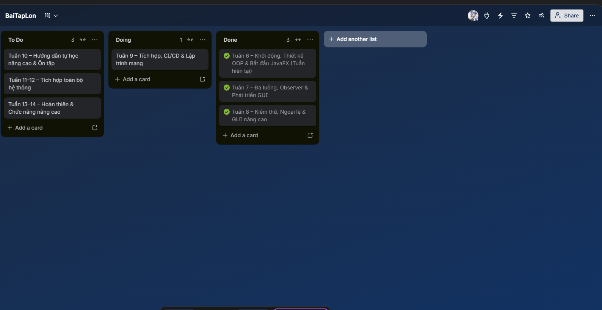
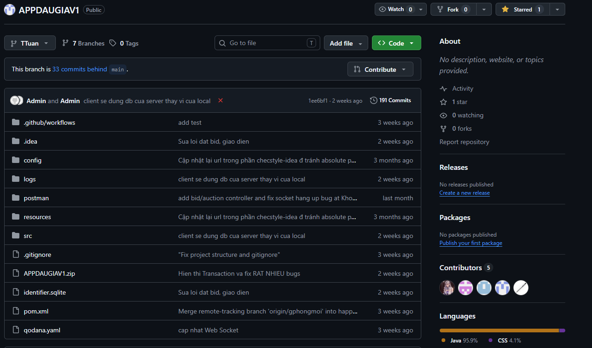
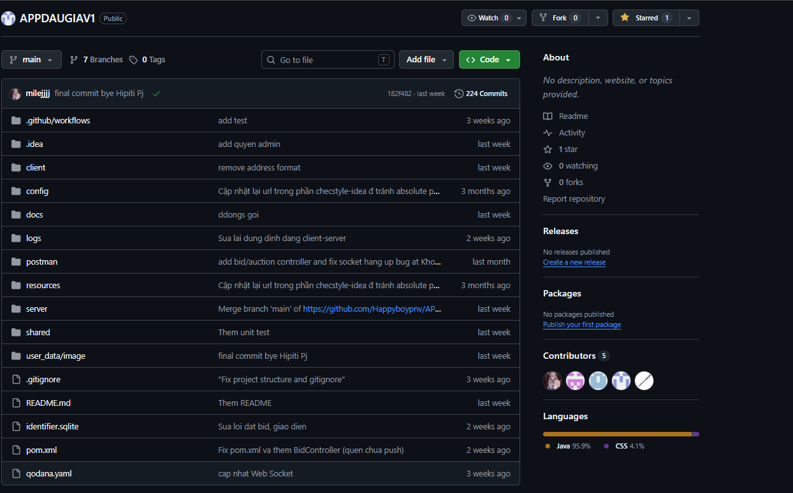
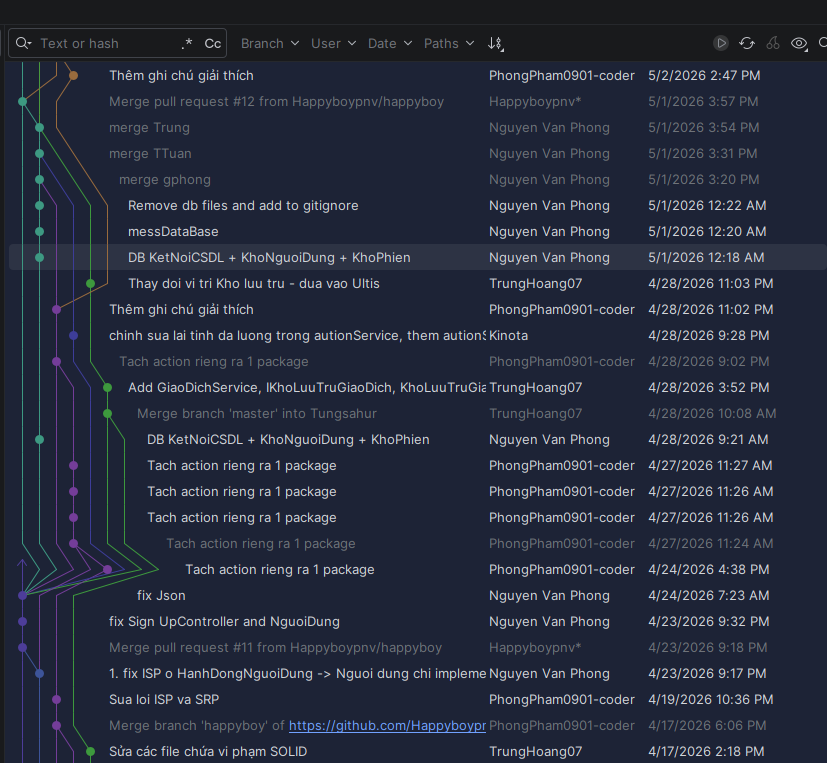

Hợp tác & Làm việc nhóm Trực tuyến
Ứng dụng bộ công cụ Google Workspace (Docs, Slides, Sheets, Drive) để cộng tác học thuật theo thời gian thực và quản lý dự án nhóm hiệu quả.
🛠️ Công cụ Google Workspace đã sử dụng
Google Docs
Soạn thảo cộng tác- Chỉnh sửa đồng thời (real-time) nhiều người cùng một tài liệu.
- Chế độ Comment & Suggestion giúp review không làm hỏng bản gốc.
- Lịch sử phiên bản (Version History) để hoàn tác bất kỳ thay đổi nào.
- Tích hợp Gemini AI để hỗ trợ viết lại, tóm tắt và kiểm tra văn phong.
Google Sheets
Quản lý dữ liệu nhóm- Theo dõi tiến độ công việc từng thành viên bằng bảng Kanban đơn giản.
- Tính điểm, thống kê khảo sát và vẽ biểu đồ tổng hợp số liệu.
- Dùng Form phản hồi liên kết trực tiếp với Sheet để thu thập dữ liệu tự động.
- Bảo vệ vùng dữ liệu quan trọng (Protected Ranges) để tránh chỉnh sửa nhầm.
Google Drive
Kho lưu trữ chung- Tổ chức cây thư mục theo cấu trúc dự án:
/NhomA/BaoCao/TaiLieu/. - Phân quyền truy cập linh hoạt: Viewer, Commenter, Editor theo vai trò.
- Chia sẻ link có thể hết hạn để bảo vệ tài liệu sau khi nộp bài.
- Tìm kiếm thông minh theo nội dung file (không chỉ tên file).
🔄 Quy trình hợp tác nhóm thực tế
Quy trình 5 bước chuẩn hóa được nhóm áp dụng xuyên suốt dự án bài tập lớn:
Khởi tạo & Phân quyền trên Google Drive
Trưởng nhóm tạo Shared Drive chung, tổ chức cấu trúc thư mục chuẩn và phân quyền Editor/Viewer cho từng thành viên theo vai trò được giao trong dự án.
Lập kế hoạch & Phân công trên Google Sheets
Tạo bảng phân công công việc với cột: Tên nhiệm vụ / Người phụ trách / Deadline / Trạng thái. Mỗi thành viên cập nhật trạng thái công việc hàng ngày.
Đồng thời soạn thảo trên Google Docs
Các thành viên viết phần của mình song song. Dùng chế độ "Suggesting" để đề xuất sửa đổi thay vì chỉnh sửa trực tiếp, giữ nguyên văn gốc cho đến khi được phê duyệt.
Tổng hợp & thiết kế slide trên Google Slides
Mỗi thành viên chịu trách nhiệm thiết kế các slide tương ứng phần mình viết. Trưởng nhóm review tính đồng nhất về theme màu sắc và font chữ toàn bộ bài thuyết trình.
Review cuối & Nộp bài
Toàn nhóm tổ chức buổi review online qua Google Meet, dùng tính năng Comment để đánh dấu các điểm cần sửa. Sau khi hoàn chỉnh, export và nộp bài đúng hạn.
📸 Minh chứng thực hành
Giao diện soạn thảo đồng thời trên Google Docs với nhiều người dùng:


Giao diện thiết kế slide theo nhóm trên Google Slides:


⚖️ Đánh giá ưu & nhược điểm
✅ Ưu điểm nổi bật
- Làm việc song song, không cần chờ đợi — tăng tốc độ hoàn thành.
- Tự động lưu liên tục, không bao giờ bị mất dữ liệu.
- Miễn phí hoàn toàn với tài khoản Google thông thường.
- Truy cập từ bất kỳ thiết bị nào: PC, máy tính bảng, điện thoại.
- Tích hợp AI (Gemini) giúp cải thiện chất lượng văn bản nhanh chóng.
- Lịch sử phiên bản đầy đủ — có thể quay về trạng thái cũ bất kỳ lúc nào.
⚠️ Hạn chế & Thách thức
- Cần kết nối internet ổn định — khó dùng ở vùng sóng kém.
- Tính năng định dạng nâng cao kém Microsoft Office (Track Changes phức tạp).
- Khi quá nhiều người chỉnh sửa cùng lúc, giao diện có thể bị giật lag.
- File lớn (nhiều hình ảnh, video) tải chậm hơn khi mở trực tuyến.
- Phần mềm soạn thảo mã (code) có hạn chế so với VS Code / IDE chuyên dụng.
💭 Bài học & Nhận định cá nhân
"Hợp tác trực tuyến không chỉ là vấn đề công nghệ mà còn là kỹ năng giao tiếp, phân quyền và tin tưởng lẫn nhau. Google Workspace chỉ là công cụ — chìa khóa là quy trình làm việc nhóm được thống nhất từ đầu."
📌 Kỹ năng kỹ thuật đã học được:
- → Thiết lập cấu trúc Shared Drive theo quy chuẩn dự án.
- → Sử dụng Suggesting Mode thay vì chỉnh sửa trực tiếp.
- → Protect Ranges trong Sheets để bảo vệ dữ liệu quan trọng.
- → Cài đặt quyền truy cập hết hạn sau ngày nộp bài.
🎓 Kỹ năng mềm được trau dồi:
- → Kỹ năng phân công và theo dõi tiến độ nhóm.
- → Giao tiếp bằng comment thay vì nhắn tin riêng lẻ.
- → Giải quyết xung đột nội dung (merge conflicts) khi cùng sửa.
- → Tôn trọng deadline và cập nhật tiến độ chủ động.